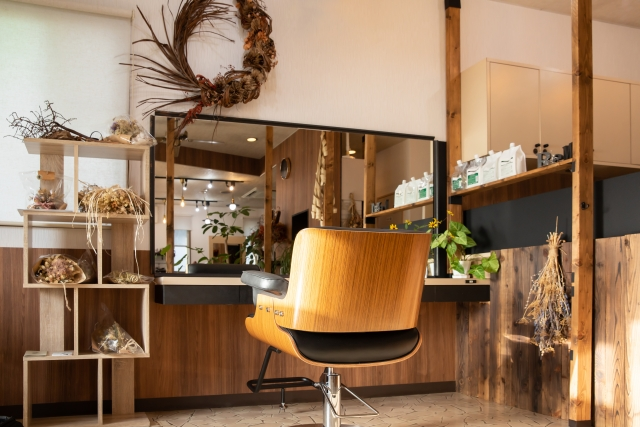
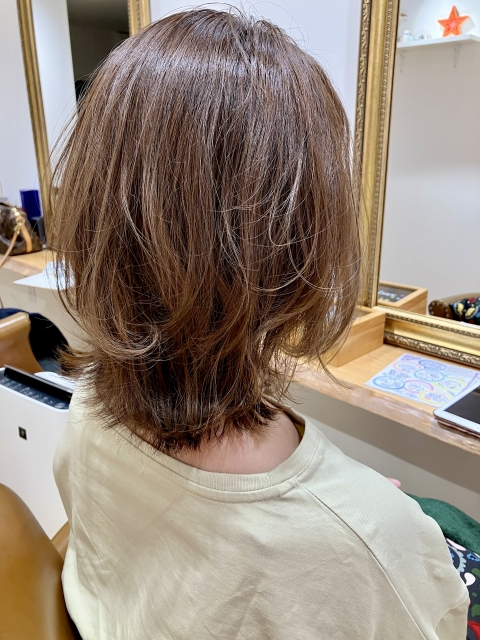
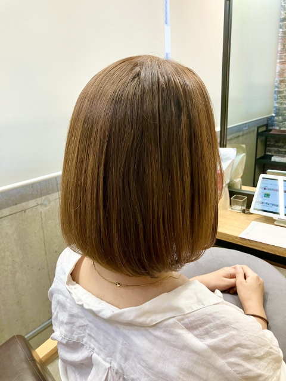

24時間
いつでも
簡単予約
こんなお悩みありませんか？
- 髪の広がりが気になる
- パサつきが気になる
- 朝のスタイリングが大変
- 効果が続かない
Reveの髪質改善で解決できます
- まとまりやすい髪へ
- 指通りなめらかに
- 朝のスタイリングが楽になる
- 効果が長く続く
Reveが選ばれる理由
完全予約制のプライベート空間
周りを気にせず過ごせる、あなただけの落ち着いたサロン空間。

一人ひとり合わせた施術
髪質や悩みに合わせて、最適なケアと施術をオーダーメイドで提案。

ダメージを抑えた髪質改善
髪に負担をかけずに内側から整え、自然なツヤと扱いやすさへ。
施術後の変化イメージ
Before
・広がりやすい髪
・パサつきが気になる

After
・まとまりのある自然な仕上がり
・指通りなめらかな髪へ

施術の流れ
-
01
カウンセリング
髪のお悩みや理想の仕上がりを丁寧に伺います
-
02
髪質チェック
現在の状態に合わせて最適な施術を選びます
-
03
髪質改善トリートメント
ダメージを抑えながら内部から整えます
-
04
仕上げ・スタイリング
まとまりのある自然な仕上がりへ
お客様の声
★★★★★
広がりやすかった髪がまとまりやすくなりました。
朝のスタイリングがとても楽になって嬉しいです。
★★★★★
パサつきが気になっていましたが、
ツヤのある仕上がりに満足しています。
★★★★★
指通りがよくなって扱いやすくなりました。
自然な仕上がりでとても気に入ってます。
よくある質問
Q 表示料金以外に追加料金はかかりますか？
A 基本的に表示料金以外はいただいていません。
施術前に内容として料金をご説明いたしますのでご安心ください。
施術前に内容として料金をご説明いたしますのでご安心ください。
Q 施術にはどのくらいの時間がかかりますか？
A 初回はカウンセリングを含めて約2時間ほどいただいております。髪の状態に合わせて丁寧に施術いたします。
Q カラーやパーマをしていても施術できますか？
A はい、大丈夫です。髪の状態を確認しながら最適な施術をご提案いたします。
Q 初めてでも大丈夫ですか？
A はい、初めての方にも安心してご来店いただけるよう丁寧にカウンセリングを行っております。髪のお悩みやご希望をお気軽にご相談ください。
その他ご不明な点がございましたら
お気軽にお問い合わせください。
店舗情報
- サロン名
- Reve
- 住所
- 〒000ー0000
青森県青森市○○1-1-1 - 営業時間
- 10:00~19:00
- 定休日
- 月曜日
- 電話
- 013ー000ー0000
- アクセス
- 青森駅徒歩5分